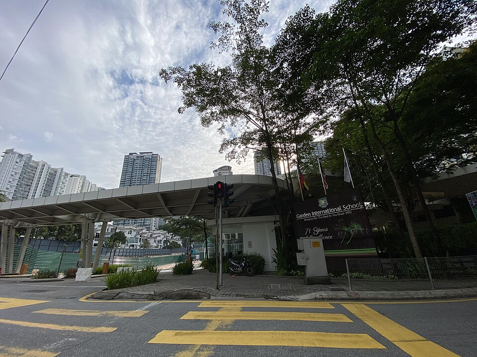

가든 인터내셔널 스쿨 정문(쿠알라룸푸르) · 사진: Fuzheado / Wikimedia Commons, CC BY-SA 3.0
가든 인터내셔널 스쿨(Garden International School) — 과목이 줄어드는 학교
1. 가든 인터내셔널 스쿨은 어떤 학교인가
· 설립 — 1951년 쿠알라룸푸르의 레이크 가든스(Lake Gardens)에서 가든 스쿨(Garden School)이라는 이름으로 출발한 것으로 알려져 있습니다. 말라야 시절 외국인 가정을 위해 세워진 초창기 국제학교 가운데 하나로 알려져 있습니다.
· 이전 — 1955년 부킷빈탕(Bukit Bintang)으로, 이후 클랑밸리 안에서 몇 차례 옮긴 끝에 1996년 현재의 몬키아라(Mont Kiara)로 옮긴 것으로 알려져 있습니다.
· 캠퍼스 — 데사스리하르타마스(Desa Sri Hartamas)의 유아 과정 캠퍼스와 몬키아라의 초·중등 캠퍼스, 두 곳으로 나뉘어 있는 것으로 알려져 있습니다.
· 학년 — 3세~18세까지 이어지는 통학형 남녀공학으로 알려져 있습니다.
· 구성 — 65개국 이상의 학생이 다니는 다국적 구성으로 알려져 있습니다.
· 교육과정 — 영국식 커리큘럼. IGCSE와 A-Level을 치르는 것으로 알려져 있습니다.
※ 학비·정원·합격률 등 해마다 바뀌는 수치는 이 글에서 다루지 않습니다. 학교 요강을 직접 확인하세요.
2. 핵심 — 영국식은 "깔때기" 구조다
한국 학교와 미국식 학교에 익숙한 가정이 영국식에서 가장 당황하는 지점이 여기입니다. 한국 고등학교는 국·영·수·사·과를 끝까지 다 합니다. 미국식은 필수 과목을 유지하면서 AP를 얹어 넓힙니다. 영국식은 반대로 계속 깎아냅니다.
| 단계 | 과목 수(일반적으로) | 이 단계에서 정해지는 것 |
|---|---|---|
| Year 7~9 (중등 초반) | 거의 전 과목 | 아이가 무엇을 잘하는지 드러나는 기간 |
| Year 10~11 (IGCSE) | 대략 8~10과목 | 2년 뒤 A-Level에 고를 수 있는 범위 |
| Year 12~13 (A-Level) | 대략 3~4과목 | 사실상 대학 전공 |
※ 과목 수와 조합은 학교·학생마다 다릅니다. 위 숫자는 영국식 과정의 일반적인 형태이며, 가든 인터내셔널 스쿨의 실제 개설 과목은 학교 요강을 확인하세요.
이 구조가 왜 중요하냐면, 결정의 순서가 거꾸로이기 때문입니다. 미국식은 "일단 열심히 하고 G12에 진로를 정하자"가 가능하지만, 영국식은 Year 10에 고른 IGCSE 과목이 Year 12의 A-Level 선택지를 가두고, 그 A-Level이 지원 가능한 전공을 가둡니다. 즉 중3 무렵의 과목 선택이 대학 전공을 좁히기 시작합니다.
그래서 상담에서 제가 늘 드리는 말씀은 하나입니다. "가고 싶은 전공에서 거꾸로 내려오세요." 공학이면 A-Level에 수학·물리가 필요하고, 그러려면 IGCSE에서 수학과 물리(또는 통합과학의 해당 영역)를 놓지 말아야 합니다. 의·약 계열이면 화학과 생물이, 경영·경제면 수학이 발목을 잡는 경우가 많습니다. 자세한 조합은 A-Level 과목 선택과 IGCSE 과목 선택에 정리해 두었습니다.
3. 쿠알라룸푸르의 다른 학교와 무엇이 다른가
말레이시아에서 한국 가정이 함께 올려놓고 비교하는 두 학교를 고등 과정의 끝으로 갈라 보면 이렇습니다.
| 항목 | ISKL | 가든 인터내셔널 스쿨 |
|---|---|---|
| 계열 | 미국식 + IB | 영국식 |
| 고등 마무리 | 미국식 졸업장 · IB 디플로마 | IGCSE → A-Level |
| 과목 수 | 비교적 넓게 유지 | 단계마다 줄어듦 |
| 진로 결정 시점 | G11 무렵 트랙 선택 | Year 10부터 좁혀짐 |
| 이런 아이에게 | 아직 방향을 못 정했다 | 잘하는 과목이 분명하다 |
표를 "어느 쪽이 좋냐"로 읽지 마시고 "우리 아이가 지금 어느 칸에 있냐"로 읽으셔야 합니다. 진로가 아직 흐릿한 아이를 영국식에 넣으면 Year 10 과목 선택에서 부모가 대신 골라주게 되고, 반대로 이미 이과로 굳은 아이는 영국식에서 필요한 과목만 깊게 파는 편이 효율적입니다.
4. 한국(주재원) 학생이 겪는 어려움
· Year 10 과목 선택이 너무 일찍 온다. 한국이었으면 아직 진로를 고민할 시기인 중3 무렵에, 8~10과목으로 추리는 결정을 해야 합니다. 정보가 부족한 상태에서 "쉬워 보이는 과목"으로 고르면 2년 뒤에 되돌릴 수 없습니다.
· 영어가 늦으면 과목이 먼저 깎인다. 영어가 아직 학습영어 단계가 아니면 글쓰기가 많은 인문 과목부터 포기하게 되고, 결과적으로 선택지가 성적이 아니라 영어로 좁혀집니다. → EAL(영어 지원)
· 답안 형식이 점수다. IGCSE·A-Level은 배점에 맞춰 분량과 근거 개수를 맞추는 것이 채점 기준입니다. 내용을 알아도 형식이 안 맞으면 점수가 안 나옵니다.
· 두 캠퍼스 구조. 유아 과정과 초·중등 캠퍼스가 나뉘어 있는 것으로 알려져 있어, 형제가 학년 차이가 크면 등하교 동선을 미리 확인하시는 편이 좋습니다.
· 영어로 된 수학. 알지브라 용어가 영어이고, 서술형에서 풀이 과정(show your work)을 영어 문장으로 적어야 단계 점수를 받습니다.
5. 그래서 이렇게 준비합니다
🎯 먼저 — 전공에서 거꾸로 내려오는 과목 설계
영국식에서 가장 값이 큰 준비는 과목 설계입니다. 아이가 관심 있는 계열을 두세 개 적어 두고, 거기서 요구하는 A-Level 과목 → 그 과목에 필요한 IGCSE 과목 순으로 거꾸로 내려오는 표를 한 장 만들어 두면 Year 10 선택이 훨씬 수월해집니다. 아직 진로가 흐릿하면 수학과 과학을 마지막까지 열어두는 조합이 안전합니다.
📖 영어과외 — 읽는 영어에서 답안 쓰는 영어로
Year 7~9에는 읽기 레벨과 과목별 어휘를 올리면서 주장 → 근거 → 분석의 뼈대를 잡습니다. Year 10부터는 IGCSE 기출 문항의 배점에 맞춰 문단 수와 근거 개수를 맞추는 훈련으로 성격이 바뀝니다. (영어 공부법 참고)
📐 수학과외 — 알지브라 용어 + 단계 점수
알지브라·지오메트리 개념을 한국식 풀이와 영어 용어로 연결하고, 풀이를 영어 문장으로 적는 습관을 들입니다. 영국식 수학은 답이 틀려도 과정에서 점수를 주기 때문에 쓰는 습관이 곧 점수이고, 여기서 잡아둔 서술이 A-Level 수학으로 그대로 이어집니다. (알지브라 공부법 참고)
🗺️ 편입 시기별 우선순위
· 유아~Year 6 편입 — 읽기 레벨과 말하기. 수업 참여가 곧 평가입니다.
· Year 7~9 편입 — 가장 여유 있는 시기입니다. 영어를 학습영어 수준으로 올리고 잘하는 과목을 찾아두는 기간으로 쓰세요.
· Year 10 편입 — IGCSE 과목 조합부터 함께 봅니다. 이미 시작된 2년 과정에 올라타는 것이라 진도 파악이 먼저입니다.
· Year 12 편입 — A-Level 3~4과목 확정과 대학 지원 일정을 먼저 잡고 시작하세요. → 입학 준비 총정리
6. 말레이시아의 강점 — 시차 1시간 화상과외
말레이시아는 한국과 시차가 1시간이라 방과 후 화상 1:1 수업을 붙이기 좋습니다. 현지 학원은 말레이시아 로컬 시험이나 영어 회화 중심인 곳이 많아, IGCSE·A-Level 답안 형식과 과목 설계를 한국어로 짚어 줄 곳을 찾기가 쉽지 않습니다. 아이의 실제 과제와 채점된 답안지를 화면에 놓고 "왜 여기서 점수가 깎였는지"부터 보는 방식이 가장 빠릅니다. 말레이시아 전반 안내는 말레이시아 국제학교 안내에 정리했습니다.
정리
가든 인터내셔널 스쿨은 1951년 출발로 알려진 쿠알라룸푸르의 영국식 국제학교이고, 지금은 몬키아라를 중심으로 두 캠퍼스에서 운영하는 것으로 알려져 있습니다. 이 학교를 고를 때 판단 기준은 시설이나 규모보다 "우리 아이가 과목을 줄여 가는 구조에 맞는가"입니다. ① Year 10 IGCSE 과목 선택이 ② Year 12 A-Level 3~4과목을 가두고 ③ 그것이 전공을 가둡니다. 그래서 준비는 항상 전공에서 거꾸로 내려와야 합니다. 30분 무료 상담으로 우리 아이의 과목 지도를 한 장으로 그려 보세요.